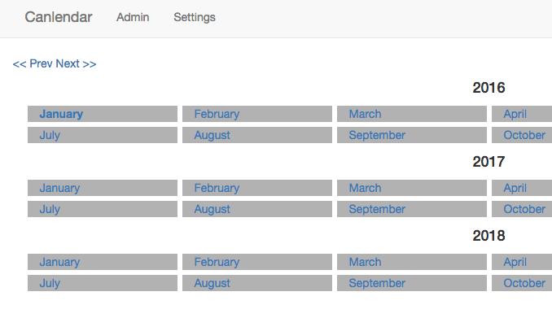
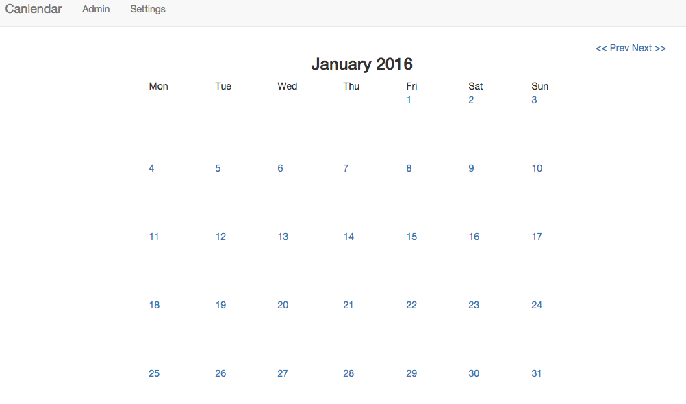
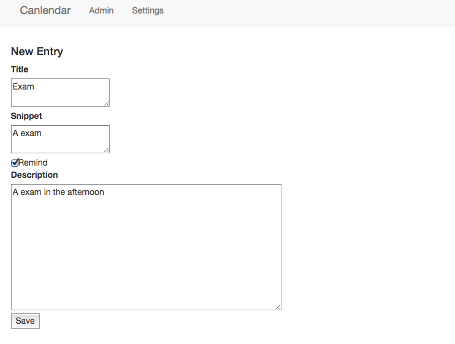
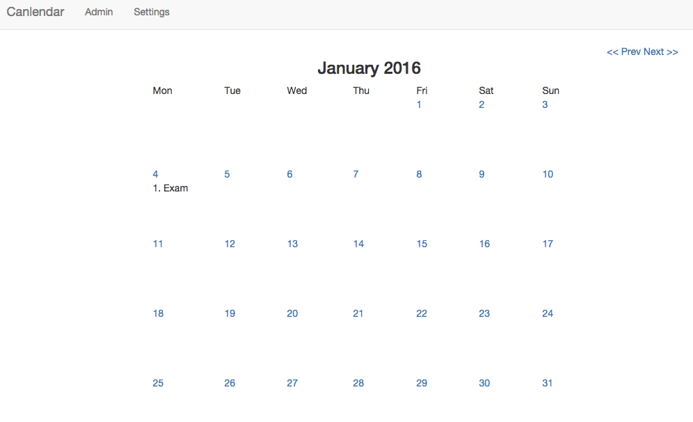

A web calendar
This is a web calendar implemented by Django. Django is a full-stack Python Wed framework. "full-stack" means that it combines front-end and back-end together and allows web application more modular.
Run web calendar on local machine
Download the web calendar and enter the CalendarDjango folder. Make sure you have installed Python and Django. Then type command:
python manage.py runserver
Well done! The server is running now. You can type 127.0.0.1:8000 on you web browser (Chrome, Firfox or others).
A web calender will be like this:
Click on one month, you will enter the month:
Click on one day, you can write a reminder:
Click on save button, a reminder will appear on that day:
After you saved a reminder, it would be stored in SQL database in the
CalendarDjangofolder. So when you stop and restart the surver, the entry willstill be there unless you delete it from the database.